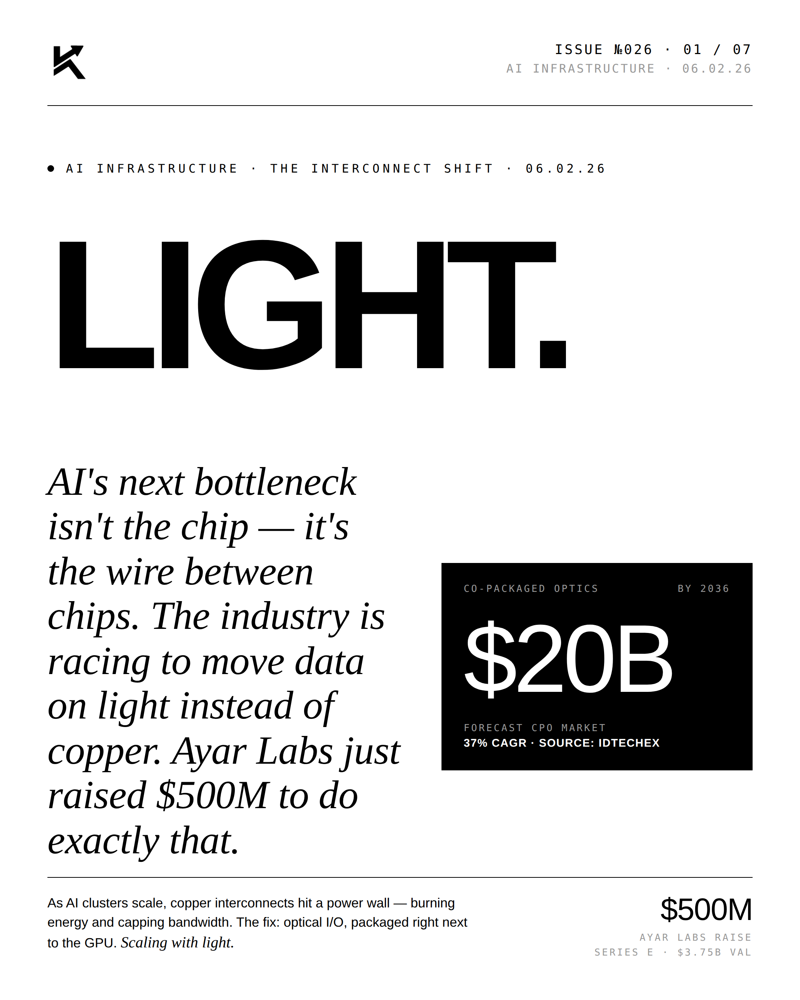
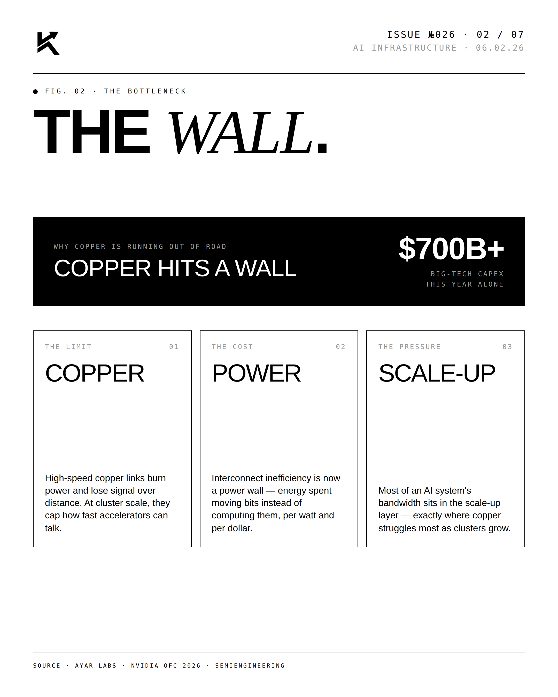
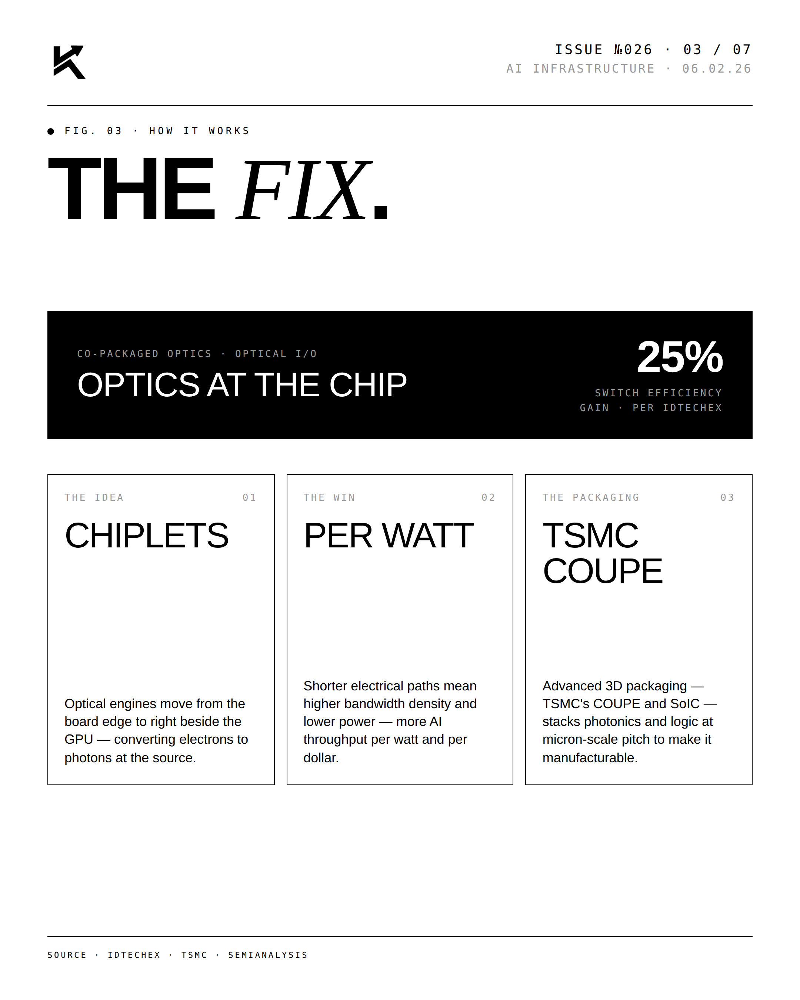
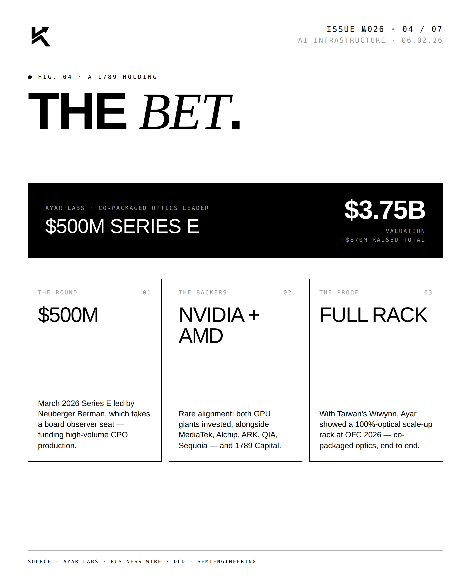
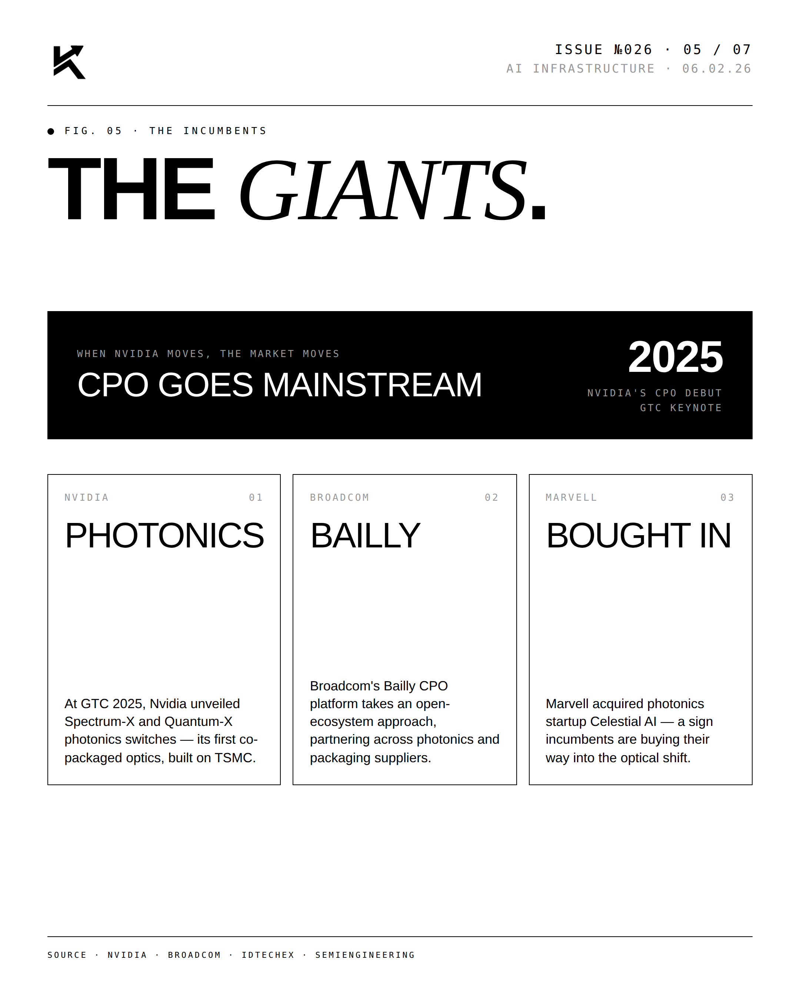
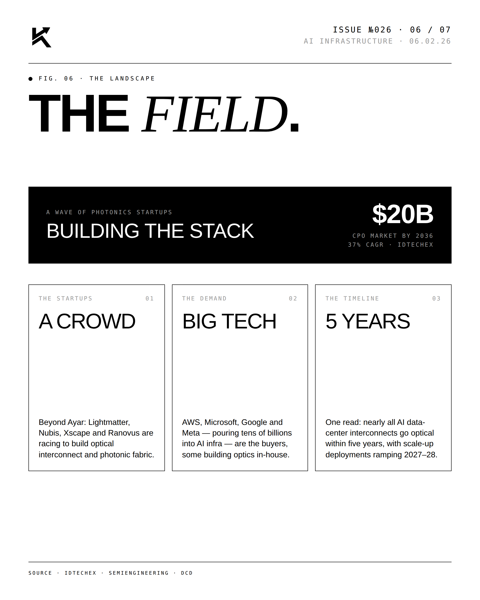
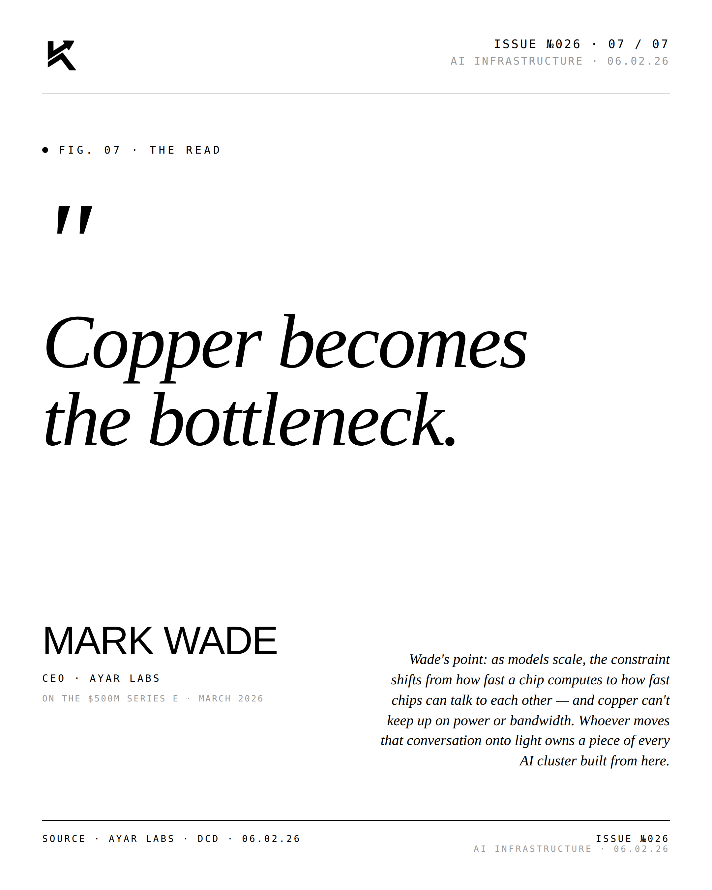

INFRASTRUCTURE · PHOTONIC INTERCONNECT · 06.02.26
Light.
AI's next bottleneck isn't the chip — it's the wire between chips. The industry is racing to move data on light instead of copper. Ayar Labs just raised $500M to do exactly that.

The Lead.
Copper hits its physics ceiling at GPU density. Photonics moves the data without melting the rack. Whoever ships first owns the interconnect layer of the AI age.





"Copper becomes
the bottleneck."MARK WADECEO · AYAR LABS · On the $500M Series E · June 2, 2026
